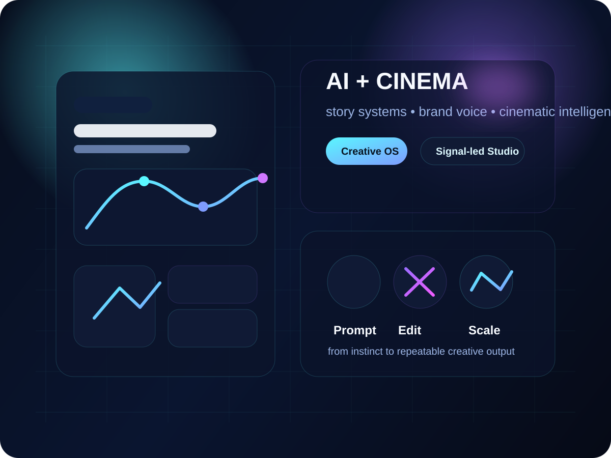

Positioning
0
Distinct AI-Cinematic Identity
Not a generic writer site. Not a generic AI site. A differentiated studio positioning built around cinematic intelligence.
I am Divya Prakash — founder of CinematikInk. My work sits at the intersection of screen instinct, technology thinking, visual storytelling, and AI-enabled content design. This website is not just a portfolio. It is my creative operating system.

This website is designed to communicate what makes CinematikInk different: strategic intelligence, cinematic storytelling, premium visual communication, and AI-led execution. These are the signals your visitors should feel within seconds.
CinematikInk becomes stronger when it does not behave like a brochure. It needs to feel like a signal — strong, intelligent, and emotionally designed.

Services are framed here as outcomes, not just deliverables. That helps the website feel like a serious AI creative studio instead of a freelance menu.
Film ideas, reel concepts, episodic structures, dialogue enhancement, story arcs, and narrative frameworks that retain human depth while accelerating creation.
Premium websites that act like digital identity decks — ideal for creators, thought leaders, NGOs, media people, and AI-forward brands.
Frameworks for repeatable content creation across carousels, reels, pitch decks, pages, awareness campaigns, and authority-building communication.
High-impact presentations with narrative sequencing, polished copy, premium visuals, and a distinct storytelling rhythm built for decision-makers.
Positioning work that helps a founder or institution sound sharper, look more premium, and communicate with emotional clarity across platforms.
Prompt packs, studio workflows, reusable templates, internal creative systems, and branded assets designed for long-term content continuity.
This pipeline visual communicates how you work: start from signal, structure with AI, build cinematically, and scale across platforms.

“I do not use AI to replace creativity. I use AI to sharpen storytelling, scale presentation, and build content systems that still feel human.”
My identity is built on a rare overlap: technology thinking, screenwriting instinct, creative direction, and institutional communication. That is the core advantage CinematikInk brings into every script, website, deck, and brand narrative.
I work on founder identity websites, AI-forward creative positioning, cinematic brand storytelling, scripts, presentations, and content systems that need strong thought and stronger presentation.